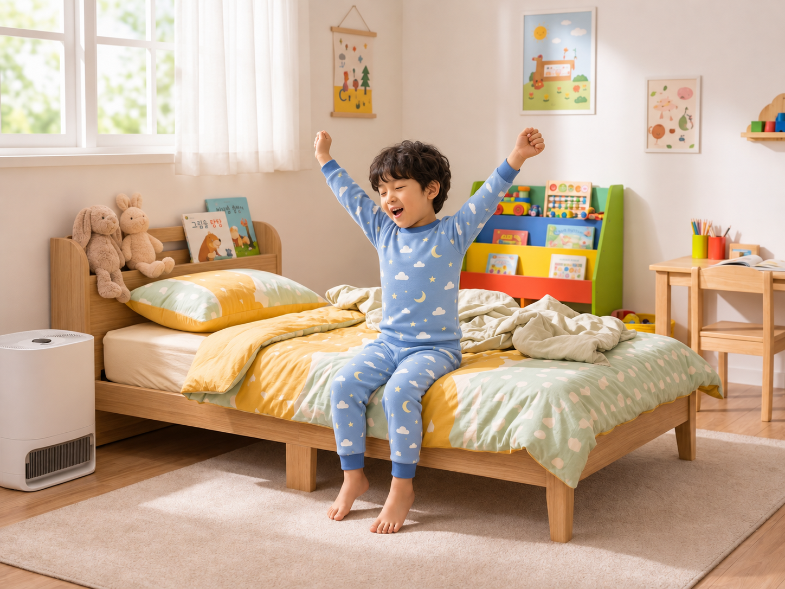
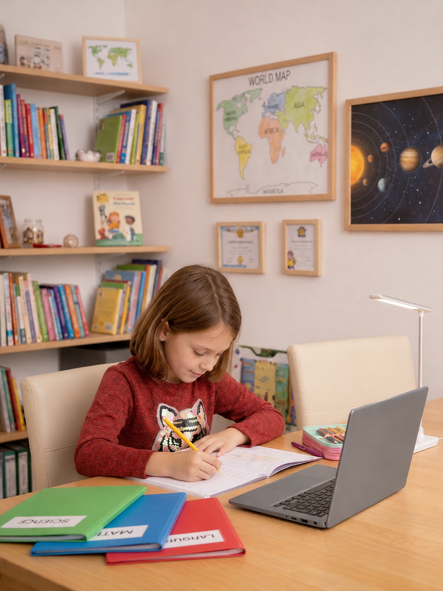
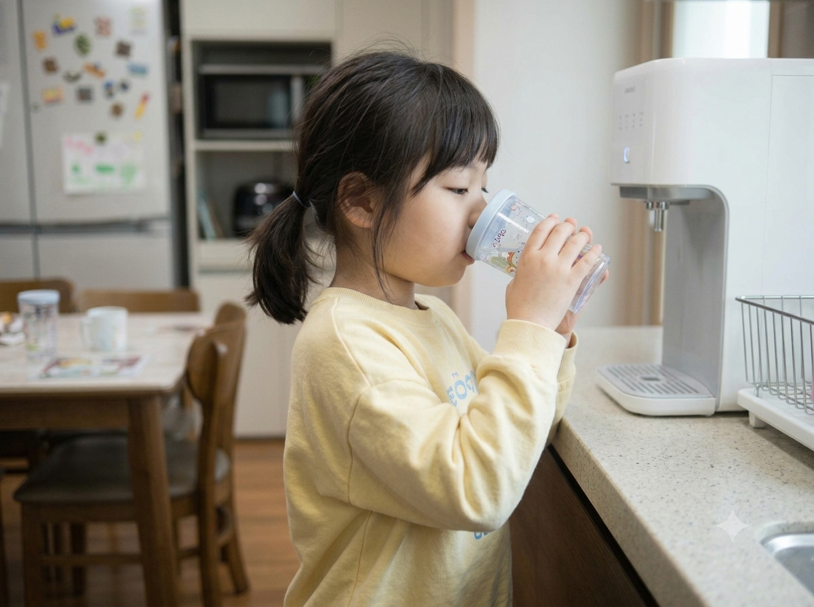

GOAL 01 · 달성
아침 8시 기상 21일

TODAY
GROWTH REPORT · NOV 2026
작은 체크가 쌓인 8주의 기록
지난 8주 동안의 실천을 한눈에 모았어요. 얼마나 꾸준했는지, 무엇을 해냈는지 확인해 보세요.
GROWTH RATE
+43%
지난 4주보다 실천율이 올랐어요
STREAK
18일
하루도 빠짐없이 이어가는 중
COMPLETED
126개
지금까지 완료한 할 일
GOALS
7개
끝까지 해낸 목표
81%
최근 5주 · 최장 연속 18일
이번 주 완료한 일 24개
기간 11.10 (월) – 11.16 (일)
최근 달성한 목표 4개
GOAL 01 · 달성

GOAL 02 · 달성

GOAL 03 · 달성
GOAL 04 · 달성

WHAT'S NEXT?